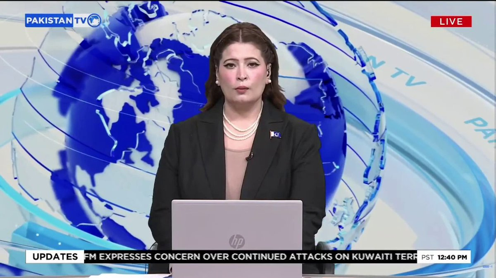
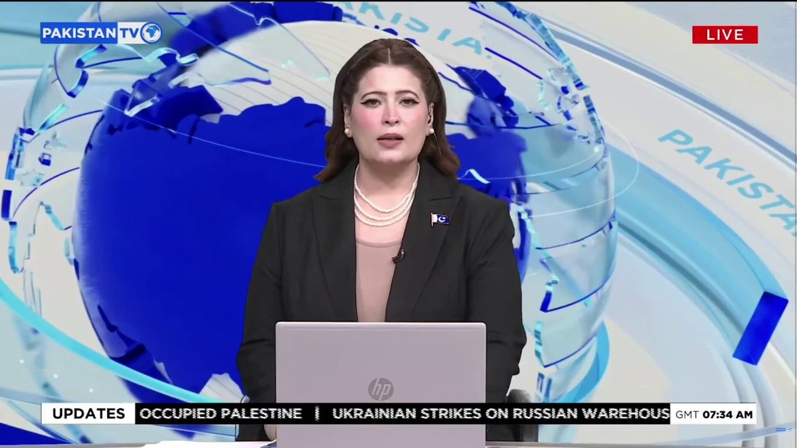
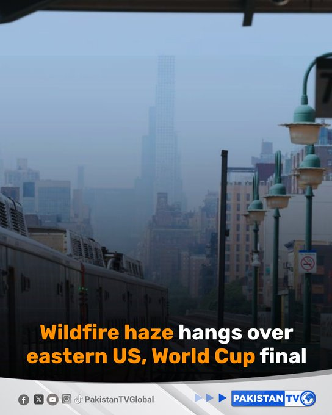
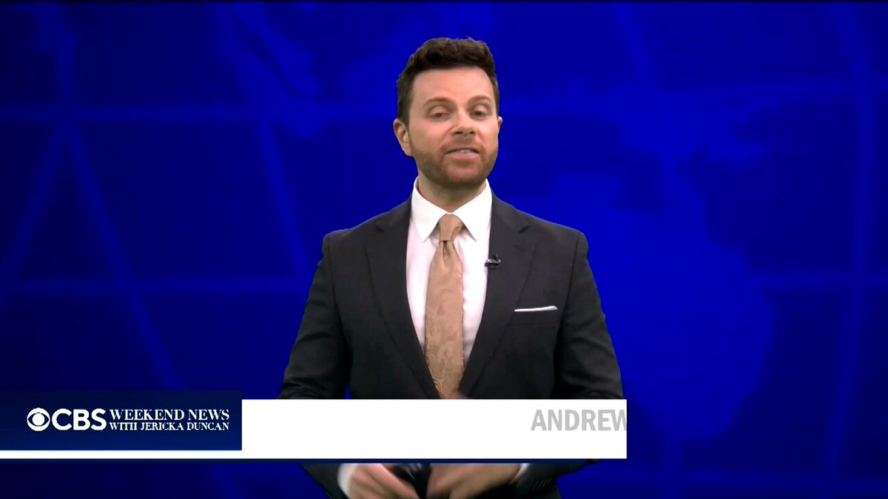

@CBSNews
📝 原文: Russia launches deadly, massive ballistic missile attack in Kyiv, Ukraine
🇨🇳 译文: 俄罗斯对乌克兰基辅发动致命的大规模弹道导弹袭击

🕒 2026-07-19T12:00:00+00:00
| 来源 | 旧窗口内数量 | 本次新增 | 本次淘汰 | 当前窗口内共有 |
|---|---|---|---|---|
| 推文 + Dawn 新闻 | 0 | 35 | 0 | 35 |
| ARY News | 0 | 0 | 0 | 0 |
注：淘汰数 = 旧窗口内数量 + 本次新增 - 当前窗口内共有












暂无文章。